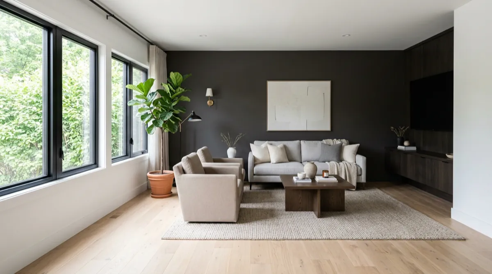

Interior & Cabinet Painting in Sachse, TX
The difference between a paint job you love and one you regret is almost never the paint — it's the prep. In Sachse homes we fill nail pops, sand slick spots, caulk gaps, and prime stains before a single coat of color goes on. Rated 5.0 across 67 Google reviews.
A whole-home interior repaint in Sachse typically runs $4,000-$9,000 depending on size, prep, and color count - a recent ~1,500 sq ft repaint (walls and ceilings, paint included) came in at $5,900, and most single rooms are finished in 1-2 days. OnPoint Pros handles whole-home repaints, cabinet refinishing, accent walls, ceilings, and trim across Sachse, TX. Family-owned, fully insured, rated 5.0 across 67 Google reviews.
The difference between a paint job you love and one you regret is almost never the paint — it's the prep. In Sachse homes we fill nail pops, sand slick spots, caulk gaps, and prime stains before a single coat of color goes on.
Most Sachse walls carry knockdown or orange-peel texture, and paint behaves differently on texture than on smooth drywall. We match sheen and application to the surface — and because we're a drywall crew too, wall damage gets properly repaired, not painted over.
From a single accent wall to a whole-home repaint, Sachse homeowners get one insured crew, an upfront price, and a home left cleaner than we found it. Most clients stay in the home the entire time — we work room by room.
Walls, ceilings, and trim — cut sharp, rolled even, and cleaned up like we were never there.
Kitchens masked into a controlled spray zone; doors sprayed off-site for a factory-smooth finish.
Color-drenched feature walls, board-and-batten, and bold contrasts — taped to a razor line.
Flat, knockdown, or freshly de-popcorned ceilings painted without a drop on your floors.
Enamel that levels out smooth — the detail work that makes the whole room look finished.
Patches textured, primed, and painted in one visit — or the full wall corner-to-corner for a perfect color match.
Rated 5.0 across 67 Google reviews.
“Great work, reasonably priced and professional service. I highly recommend anyone needing drywall repair to hire OnPoint Pros for all your drywall needs.”
— Mark Burke
Verified Google review
“OnPoint Pros LLC did an incredible job. They were prompt, friendly and thorough”
— Darrell Smith
Verified Google review
“OnPoint Pros did an excellent job with my drywall repair. You honestly can’t tell there was ever damage the texture and paint match perfectly. Very professional, clean work, and great attention to detail. I would absolutely hire them again.”
— Thu Phan
Verified Google review
A lot of Sachse homeowners start with a fresh coat of paint — then have us take on the bathroom remodel they've been putting off. Same crew, same trust, one point of contact.
See Sachse Bathroom Remodeling →Whole-home interior repaints in Sachse typically run $4,000-$9,000 depending on square footage, prep needs, and color count; single rooms and accent walls are far less. Text us photos for an upfront price.
Yes. We mask the kitchen into a controlled spray zone and spray the doors off-site for a factory finish.
No. We work room by room and protect floors and furniture, so most Sachse clients stay home throughout the project.
Yes — the same crew patches holes, matches your texture, then primes and paints, so repairs disappear instead of showing through the new color.
Also serving Sachse for whole-home remodeling.
Fully insured & bonded. Text a photo for a fast, upfront price.
Call (469) 238-1719